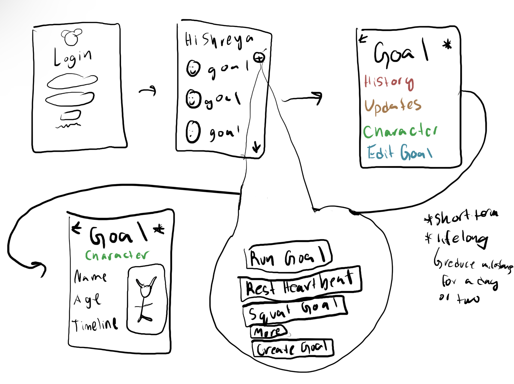
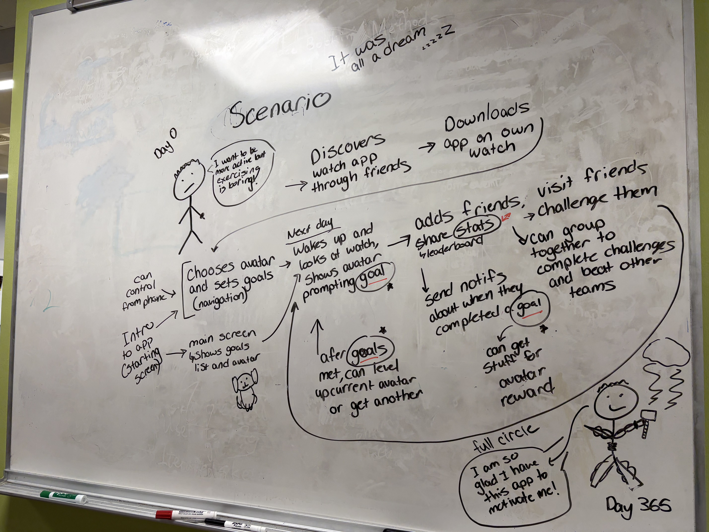

Project 3: AI
We wanted to improve current AI apps by combining the best aspects of all along with adding our own touch.
Solution
Our solution incorporates the use of pets and their use at goal milestones in order to encourage users to consistently use the app to improve their health. It also includes a community aspect by connecting users with their friends and the ability to "challenge" them.
Initial Design Process
Brainstorming
“Cute” style game to motivate users to be healthy (doing something good for self and cute avatar)
Incorporating milestones
Monitoring user health and alerting them when something’s wrong (encouraging them to get help)
Empowering age?
Possible problem: Lack of motivation, New Years resolution ppl who don’t easily achieve their physical goals, people struggling with keeping track of physical activity
Helping people with ADHD focus on tasks?
Target teenagers-20s?
Help develop habits for later on?
Ideas on Physical Design
Show avatar on sleep mode screen?
Prompts it can generate
Share with friends
Point system
Showing avatar moving with you
Summary report (add points based on workout score) (sent to phone?)
Widget on phone/watch to be reminded of goals (show avatar’s status)
Lots of customization
Multiple characters (per goal)
Notes/Improvements on Next Iteration of Design:
Encouraging people to set goals (goal-setting strategy)
Motivating with gaming/social features
Potential nostalgia feature (playing game mindset, taking those virtual rewards to in person) incorporating features from other games
Problem: Goal-setting/achieving is lacking motivation, discipline, no attachment to the fitness tracker to keep going with goal
Character can be leveled up
Streaks for how many days you use
Get items
Can visit friend’s characters and how they’re doing
Can go fight them
Interview Data + Sketches
Questions
Did you originally get your Apple Watch for your health and wellness? (Physical activity and self-care)
Do you set goals for yourself using your watch? (revolving your health and wellness)
What strategies do you use to accomplish your set goals?
Do you usually accomplish your goals with these strategies? If not, then what do you think is lacking in the plan of achieving your goal?
Is there a motivator(s) in your life that helps you reach your goal? If so, then describe.
Interview Takeaways
Setting good goals for physical health habits
Why do people not stick with fitness resolutions?
Do kind motivating gestures/reminders encourage people to accomplish their goals (overcome the stress), or does it have no positively related impact?
In what ways do people create habits/how? (What strategies do and don’t work?)
Target user group?
How much gamification are we doing for the app?
Sketches

Storyboard of App Design
Scenerios
Possible Scenerio 1
People wake up in the morning, check their watch for the time, and see their little animal on the screen which will remind them of their daily goals/tasks. Throughout the day they can look down at their watch and see the animal as their reminder - can have different facial expressions based on task completion. After tasks are completed, their little animal friend will be satisfied. This can also be an app passed down through generations, such as an older sibling telling their younger one to download the app when they are old enough to care about working out and doing physical activity.
Possible Scenerio 2
Mel wakes up to alarms from her watch. As she is wearing her watch, she is able to look at her wrist to see her cutomized avatar expressing that she wake up and drink water as these are the goals she set for herself this day.

Image describing a scenerio where someone finds the app through a recommendation
Final Prototype
Multimedia Presentation of the Prototype
project3 watch design
In progress
Credits
Shreya and Group: AI Case Study and Prototype Design